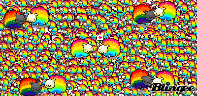

Sophia Cui
Bienvenido!
0.1
Smart-Optimize my LinkedIn and Get Found by Recruiters
0.2
Kelpie - Crowd Sourced Smart Hydroponics
About the author
1
Smart-Optimize my LinkedIn and Get Found by Recruiters
1.1
Jobseeker’s Wasted Potential
1.2
A Smarter Approach to Unemployment
1.3
The Future and Potential Pitfalls
2
Kelpie - Crowd Sourced Smart Hydroponics
2.1
Undeniable Bond with Mother Earth
2.2
Kelpie, the Bridge and the Guide
2.3
Kelpie and the Future
GitHub
UC Berkeley
LinkedIn
Xbox
W201 Portfolio
W201 Portfolio
Sophia Cui
MIDS Spring 2018
Bienvenido!
0.1
Smart-Optimize my LinkedIn and Get Found by Recruiters
0.2
Kelpie - Crowd Sourced Smart Hydroponics
About the author

Figure .: Fluffy rainbows
Updated: 2018-03-09